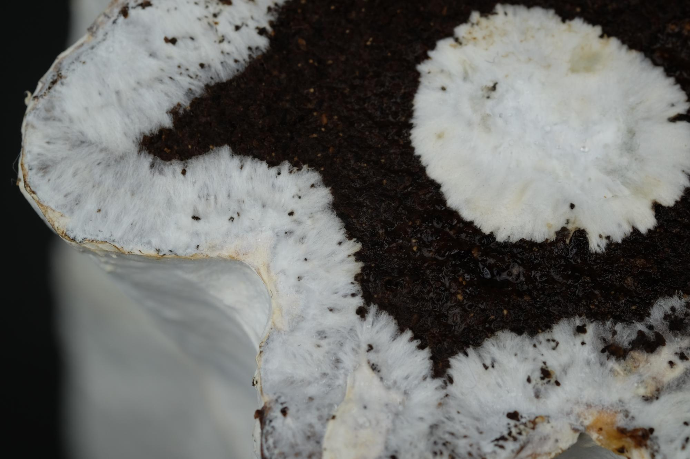
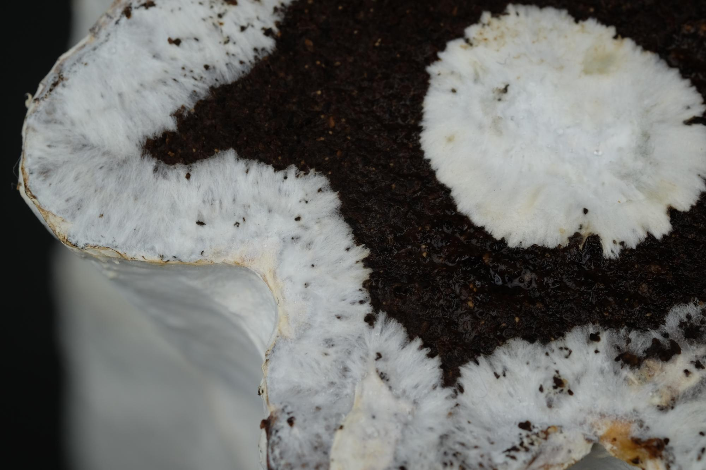
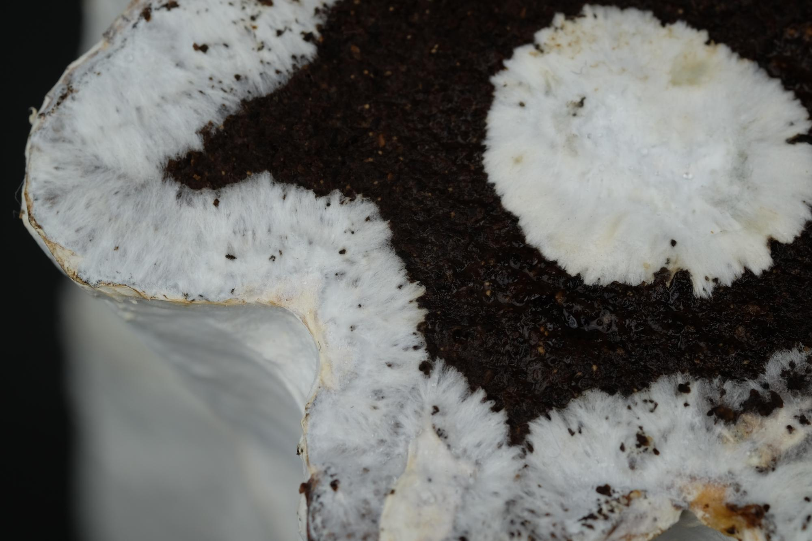

Working with living materials allows us to reshape patterns of consumption and production. Mycelium is one such living material that participates in decomposing biomass and redistributing the nutrients to reconstruct the surrounding environment. By caring for living mycelium in biowaste, we can make structural mycelium biocomposite materials. We introduce a novel method for directly 3D printing mycelium biocomposites without the need for molds or tooling. Our method comprises three main contributions: Mycofluid, a mycelium-inoculated paste that uses spent coffee grounds; Fungibot, a custom hardware system for 3D printing biopastes like Mycofluid; and a method for incubating mycelial growth within fresh 3D prints resulting in mycelium biocomposite parts. We illustrate our contributions through a series of objects showcasing our method and the material qualities of the parts. Notably, we demonstrate how living mycelium can fuse separate prints, enabling complex geometries that are otherwise challenging to 3D print as one part.
@article{luo20253d,
title={3D-Printed Mycelium Biocomposites: Method for 3D Printing and Growing Fungi-Based Composites},
author={Luo, Danli and Yang, Junchao and Peek, Nadya},
journal={3D Printing and Additive Manufacturing},
year={2025},
publisher={Mary Ann Liebert, Inc.}
}
We built Fungibot, a toolhead compatible with Jubilee, to print biopaste.

A cool thing about mycelium is that it is living. It grows exponentially across any surface it touches by developing hyphal network filling all the void space. If we put two surfaces with living mycelium together, the interface will be colonized by mycelium, leading to bio-welding.